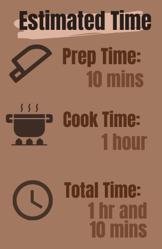
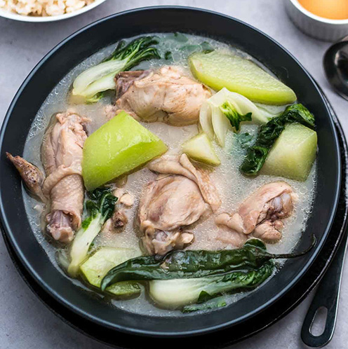

Chicken Tinola
A hearty Filipino soup that features a nourishing chicken broth with ginger alongside vegetables such as green papaya and malunggay leaves.


Chicken Tinola Recipe
1 whole chicken, cut into serving pieces
36 ounces rice washing
1/2 piece green papaya, cut into wedges
1 tablespoon garlic, minced
1 piece onion, chopped
1 thumb ginger, cut into strips
2 tablespoon fish sauce
1 cup Hot pepper leaves
1/4 teaspoon ground black pepper
Directions for Cooking
Heat oil in a pot and sauté garlic, onions and ginger. Cook until onions are soft.
Add the chicken and stir fry until color turns light brown.
Add the fish sauce and stir. Pour rice washing into the cooking pot. (Add water if needed)
Bring to a boil and cover the pot and simmer for 45 minutes.
Add green papaya and cook for 5 minutes.
Add the malunggay leaves. Stir and cook for 1 minute.
Season with fish sauce and ground black pepper in preference to your taste.